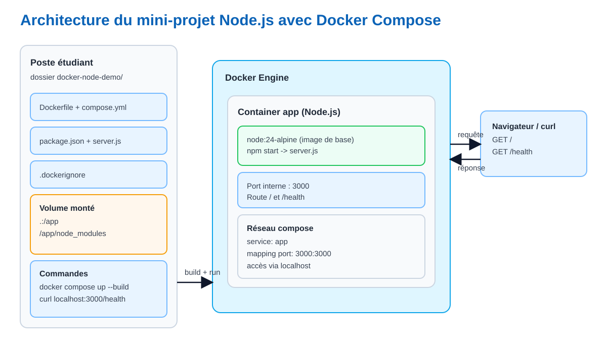
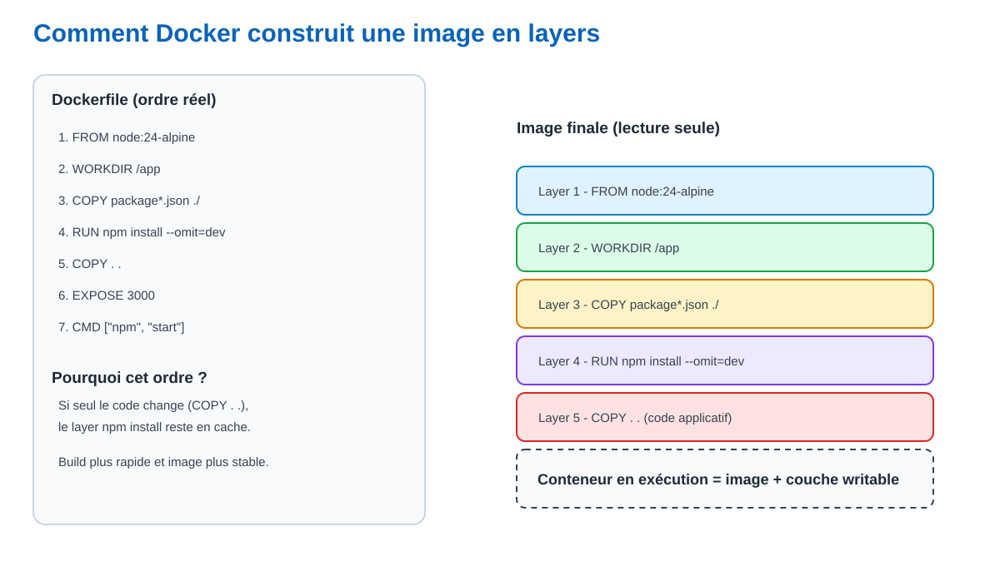

Objectif : comprendre les concepts Docker avec les bons termes, visualiser l'architecture, puis exécuter un projet Node.js conteneurisé opérationnel.
Les mots soulignés sont définis au survol (ou au focus clavier).
Nous allons construire un service Node.js unique (app) piloté par Docker Compose, exposé localement sur le port 3000.

docker-node-demo/.3000 est mappé au port conteneur 3000./, /health) arrivent dans l'application Node.js.| Terme | Définition exacte | Exemple dans le cours |
|---|---|---|
| Image | Artefact immutable en lecture seule, composé de layers. | docker-node-demo:1.0 |
| Conteneur | Processus isolé lancé à partir d'une image avec une couche d'écriture. | docker-node-demo-app |
| Layer | Couche créée par une instruction du Dockerfile. | RUN npm install |
| Registry | Serveur qui stocke des images Docker. | Docker Hub |
| Tag | Version d'image. | node:24-alpine |
| Volume | Stockage persistant séparé du cycle de vie du conteneur. | /app/node_modules |
| Bind mount | Montage direct d'un dossier hôte dans le conteneur. | .:/app |
| Port mapping | Redirection d'un port hôte vers un port conteneur. | 3000:3000 |
| Service Compose | Définition déclarative d'un composant à démarrer. | services.app |

Règle de performance : placer COPY package*.json puis RUN npm install avant COPY . . permet de réutiliser le cache lorsque seul le code applicatif change.
# Voir l'historique des layers
docker history docker-node-demo:1.0| Outil | Rôle | Commande clé |
|---|---|---|
| Docker | Construire une image et lancer un conteneur unique. | docker build, docker run |
| Docker Compose | Décrire et lancer un ensemble de services. | docker compose up |
docker --version
docker compose version
docker run hello-worldAttendu : les trois commandes renvoient une sortie valide sans erreur.
| Configuration | Objectif | Emplacement |
|---|---|---|
sandbox-node |
Exécuter des scripts Node.js (CLI) dans le runtime Node, sans serveur HTTP. | sandbox-node |
sandbox-server |
Exécuter une API Express conteneurisée et tester des routes HTTP. | sandbox-server |
sandbox-node (CLI)Fichiers réels utilisés pour la configuration CLI :
# sandbox-node/Dockerfile
FROM node:24-alpine
WORKDIR /app
COPY package*.json ./
RUN npm install --omit=dev
COPY . .
CMD ["sh", "-c", "tail -f /dev/null"]# sandbox-node/docker-compose.yml
services:
node:
build: .
container_name: sandbox-node-cli
working_dir: /app
volumes:
- .:/app
- /app/node_modules
command: sh -c "tail -f /dev/null"
stdin_open: true
tty: truesandbox-server (API Express)Fichiers réels utilisés pour la configuration serveur HTTP :
# sandbox-server/Dockerfile
FROM node:24-alpine
WORKDIR /app
COPY package*.json ./
RUN npm install --omit=dev
COPY . .
ENV NODE_ENV=production
EXPOSE 3000
CMD ["npm", "start"]# sandbox-server/docker-compose.yml
services:
app:
build: .
container_name: nodejs-docker-sandbox-app
ports:
- "3000:3000"
environment:
- PORT=3000
- NODE_ENV=production
restart: unless-stopped# depuis la racine du projet
cd sandbox-node
docker compose up -d --builddocker compose exec node npm start -- help
docker compose exec node npm start -- list-quests
docker compose exec node npm start -- create-player Alice
docker compose exec node npm start -- leaderboarddocker compose down# depuis la racine du projet
cd sandbox-server
docker compose up -d --buildcurl http://localhost:3000/
curl http://localhost:3000/health
curl http://localhost:3000/versionRésultats attendus :
/ renvoie un message texte de confirmation./health renvoie un JSON avec status: "ok"./version renvoie la version Node et l'environnement.docker compose downdocker compose ps
docker compose config
docker ps -adocker compose logs
docker compose logs -f
docker compose logs -f app
docker compose logs -f nodeUtiliser app pour sandbox-server et node pour sandbox-node.
docker compose exec app sh
docker compose exec node shdocker compose restart
docker compose stop
docker compose downAttention : ces commandes suppriment des ressources Docker. Les exécuter seulement si vous savez ce que vous retirez.
docker compose down -v --rmi local --remove-orphansdocker system df
docker image ls
docker volume lsdocker image prune -f
docker volume prune -f
docker builder prune -fsandbox-node et sandbox-server.ps, logs et exec.| Terme | Définition |
|---|---|
| Runtime | Programme qui exécute le code (exemple : Node.js exécute JavaScript). |
| Image | Modèle immutable qui contient application, dépendances et configuration. |
| Conteneur | Instance en exécution d'une image, isolée du reste du système. |
| Layer | Couche de fichiers créée par une instruction Dockerfile. |
| Dockerfile | Fichier d'instructions pour construire une image. |
| Compose | Outil pour définir et piloter plusieurs services via un fichier YAML. |
| Volume | Stockage persistant géré par Docker. |
| Bind mount | Montage d'un dossier local directement dans le conteneur. |
| Port mapping | Correspondance entre port machine et port conteneur. |
| Registry | Catalogue distant d'images Docker (exemple : Docker Hub). |
| Tag | Version ou variante d'une image. |
| Namespaces | Isolation Linux des ressources système par groupe de processus. |
| cgroups | Mécanisme Linux de contrôle des ressources CPU, RAM et I/O. |
| I/O | Abréviation de Input/Output : flux d'entrée/sortie (disque, réseau, fichiers, terminal). |
| OCI | Standard ouvert de format d'image et d'exécution de conteneurs. |